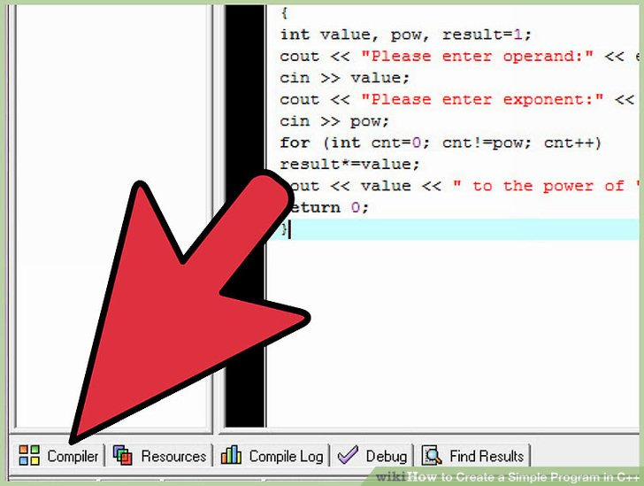

Ever wanted to program in C++? The best way to learn is by looking at examples. Take a look at the basic C++ programming outline to learn about the structure of a C++ program, then create a simple program on your own.
Get a compiler and/or IDE. Three good choices are GCC, or if your computer is running Windows, Visual Studio Express Edition or Dev-C++.
Try some example programs.Copy and paste the following into a text/code editor: A simple program is given by Bjarne Stroustrup (developer of C++) to check your compiler:
#includeA program for finding the sum of two numbers:
#includeA program for finding the product in multiplication problems:
#includeA program for finding the value of exponents:
#includeSave this as a .cpp file with a name that accurately reflects your program.Don't confuse there are many other extensions for C++ files, choose any of them (like *.cc, *.cxx, *.c++, *.cp) . It should say Save as Type: {select "All Files"}
Compile it.For users of linux and gcc compiler, use Command : g++ sum.cpp. Users of Window can use any C++ compiler, such as MS Visual C++,Dev-C++ or any other preferred program.
Run Program.For users of Linux and gcc compiler Command : ./a.out (a.out is an executable file produce by compiler after compilation of program.)